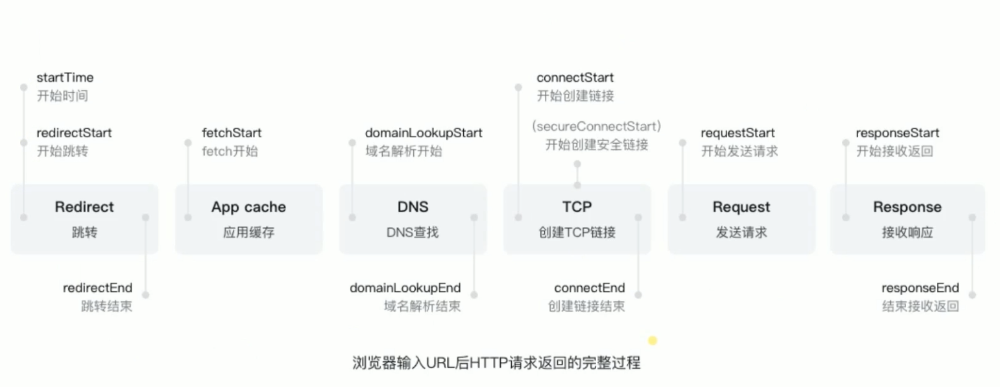
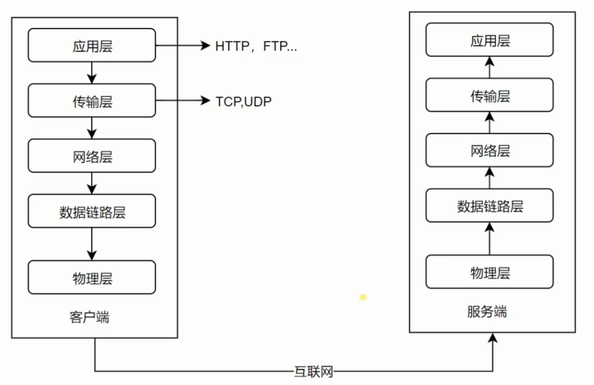
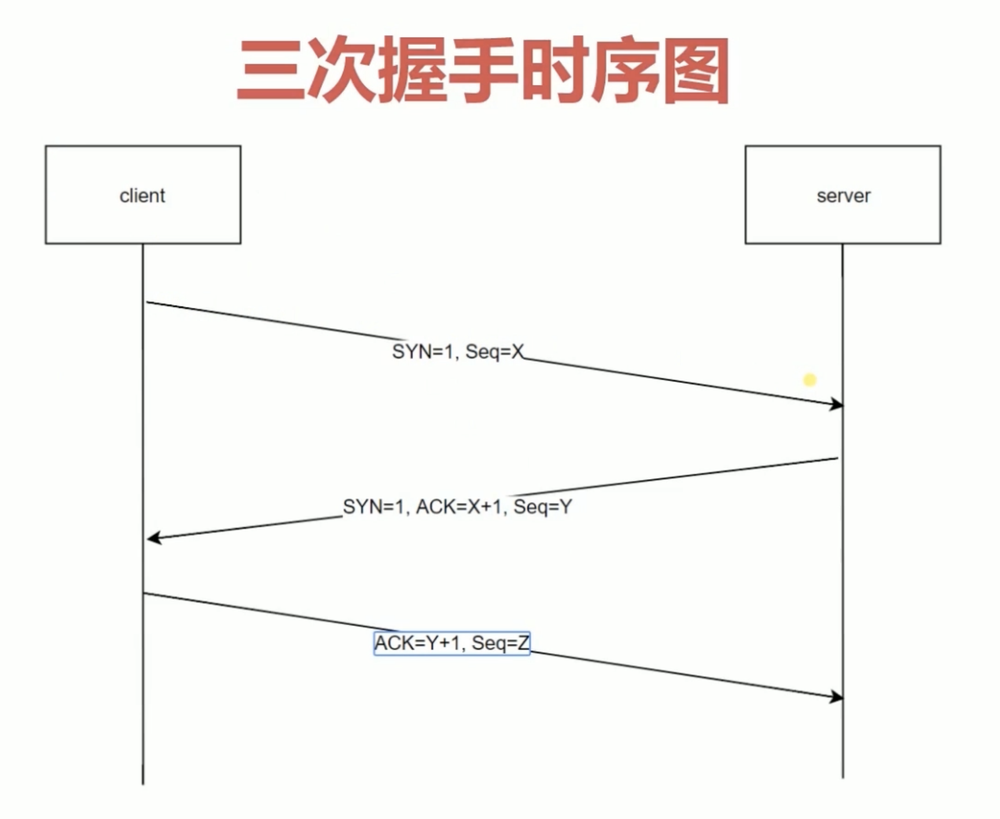
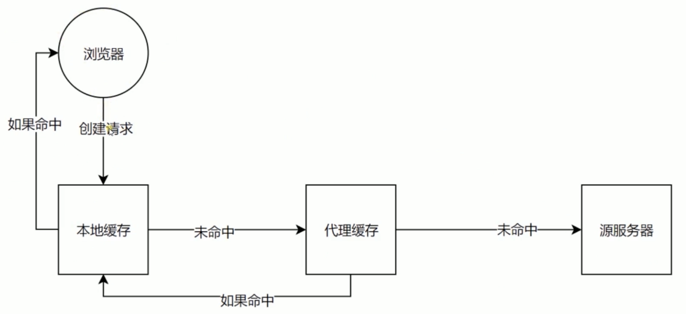

学习备注
1、缓存这块，后续可以再学习一遍，把实战的内容实践一遍。也可以深入研究一下
2、缓存到之后的内容包括csp，理解的比较浅，后序遇到，可以深入理解一下
前言
- 学习了慕课网的《HTTP协议原理+实践》课程，本篇文章是学习笔记。以便温习
- 相关的基础知识讲解比较浅，可以参考其它文章
HTTP基础
浏览器输入URL后HTTP请求的完整过程

5层网络模型

- 物理层：定义物理设备如何传输数据
- 数据链路层：在通信的实体间建立数据链路连接
- 网络层：为数据在节点之间传输创建逻辑链路
- 传输层：向客户端提供可靠的端到端服务；向高层屏蔽了下层数据传输细节
- 应用层：为软件提供服务；构建于TCP协议之上；屏蔽网络传输细节
三次握手时序图

HTTP各种特性总览 & 实践
创建一个简单的web服务
1 | /* use node.js */ |
CORS
- 浏览器 为了保证服务端安全（保证数据不被恶意篡改 ），默认不允许跨域
CORS演示
server-8001.js
1 | const http = require("http"); |
server-9001.js
1 | const http = require('http') |
test.html
1 |
|
浏览器跨域限制
- 浏览器在发送请求的时候并不知道这个服务是否是跨域的，还是会发送请求，接收内容。在接收返回数据的时候会看到请求头部中没有
'Access-Control-Allow-Origin'请求头,并且没有设置为允许的话，就会把请求内容忽略掉，并报错。
CORS解决方案
jsonp
test.html
1 |
|
- 原理
利用了 link、script、img标签上面的src或ref是允许跨域的这个原理
Access-Control-Allow-Origin
服务端添加请求头：Access-Control-Allow-Origin
1 | /*允许所有服务跨域*/ |
CORS预请求
- 浏览器默认不允许跨域，但是浏览器会发送请求，并且数据有返回。因为安全策略问题，把请求返回忽略了，并报错
- CORS限制时，会发送
预请求验证
CORS限制
请求method限制
- 默认允许跨域的method：post、head、get（这三个方法不用发送预请求）。其它方法默认不允许跨域，且会发送
预请求 - 解决方案
1 | /* 添加请求头 'Access-Control-Allow-Methods'，填写对应的方法 如下 */ |
Content-Type限制
- 默认允许跨域的Content-Type：
1 | text/plain |
- 其它Content-Type需要预请求
请求头限制
- 自定义请求头是不被允许的
允许或不被允许的请求头，请参考 https://fetch.spec.whatwg.org/#cors-safelisted-request-header
- 解决方案
1 | /* 允许我们自定义的请求头CORS */ |
####Access-Control-Max-Age
1 | /* 数字（单位：秒）代表 允许跨域的时间，在该时间内，不用发送预请求*/ |
缓存
- public：所经过的路径中的客户端、代理服务器、源服务器等（任何地方）都可以（对返回内容）进行缓存
- private：发起请求的请求方可以缓存
- no-cache：需要服务端验证
- no-store：任何地方都不可以缓存
- no-transform：告诉代理服务器，不要缓存
缓存到期
max-age=<seconds>缓存过期时间
s-maxage=<seconds> 代替 max-age=<seconds>，但只有在代理服务器中才可以生效。如果两者都设置了，则代替max-age=<seconds>
max-stale=<seconds>在请求方使用，如果max-age=<seconds>到期，缓存过期了，依然可以在max-stale=<seconds>时间内使用过期缓存
重新验证
must-revalidate，用在客户端，max-age=<seconds>到期后，必须去源服务器重新获取数据
proxy-revalidate，同上，只用在代理服务器上
缓存流程

缓存验证
last-modified 上次修改时间，主要配合if-modified-since 和if-unmodified-since使用
对比上次修改时间，以验证资源是否需要更新
Etag数据签名，配合if-match和if-non-match
对比资源签名，判断是否使用缓存
Cookie
通过
Set-Cookie设置下次请求会自动带上
健值对，可以设置多个
max-age和expires设置过期时间secure只在https的时候发送
HttpOnly无法通过document.cookie访问
可以设置二级域名下共享cookie
代码演示
- Server.js
1 | const http = require('http') |
- Test.html
1 |
|
长连接
1 | connection:"close" |
数据协商
- 客户端
1 | Accept |
- 服务端
1 | Content-Type |
跳转
- 301 和 302 的区别
302:客户端还是会访问原站
301:客户端会尽可能的缓存，不访问原站
资源限制
限制资源获取，制定资源类型
Content-Security-Policy
Security-Policy-Report-Only